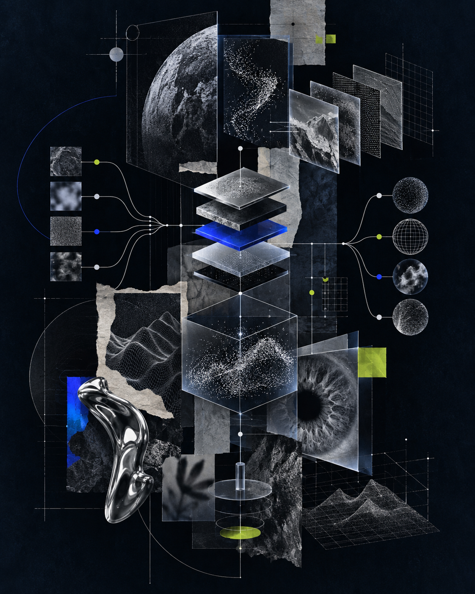

CurrentlyKyungpook National University · Global Software Convergence · JuniorEnactus KNU 10thLikelion 14th · BackendKNU Video Intelligence Lab · 3D Research · On Pause
[ 01 — POINT OF VIEW ]
“I turn gaps into momentum, then use relentless logic to move past the limits.”
I found software after taking the long route through another major. That detour taught me to treat constraints as design material: understand the failure mode, build the workflow, measure what changed.
#resilience#technical-service#human-in-the-loop
[ 02 — SELECTED SYSTEMS ]
Built like a living board.
Tap or hover each pin to reveal the design decision behind the build.
01ONGOING
Magic Academy
Project lead / PM · team of 4
A multi-agent society simulator where student and professor agents autonomously form relationships, organizations, and emergent narratives.
DESIGN DECISION
Made specification readiness a prerequisite after identifying the risk of tests getting ahead of unresolved functional requirements.
LangGraph
PostgreSQL
React
Discord Bot
02SOLO BUILD
Hierar-Do
AI hierarchical to-do service
A four-stage pipeline turns monthly goals into weekly milestones and daily actions.
DESIGN DECISION
Restricted LLM calls to parse and decompose; scheduling stays deterministic for lower cost and predictable output.
FastAPI
LangGraph
Docker
pytest

03
my-ai-agents
Four focused agents + a resumable PM → Engineer → Reviewer → QA development loop.
04AWARD
KNU MLA
PM + Backend · team of 2
A multilingual assistant with internal terminology lookup, LLM fallback, and a self-growing knowledge base.
SECURITY FINDING
Found missing authentication across chat, memo, and feedback routes; added checks to every personal-data endpoint.
FastAPI
GPT-4o
JWT
SMTP
051-WEEK HACKATHON
Ildan-Shim
Planning + Frontend · team of 3
A stress-tagging AI scheduler with secure backend OAuth delegation and real-time SSE notifications.
DEBUG NOTE
Resolved a calendar day-count mismatch by deriving the true month length from a mid-range date.
React
OAuth2
SSE
CONDITIONALLY ACCEPTED
[ 03 — RESEARCH EXPERIENCE ]
Restoration Experiment Log Analysis & Evaluation
CompMVR: Compression-Aware Multi-View Restoration Using Diffusion Models for Geometrically Consistent 3D Reconstruction
I analyzed 2D evaluation experiment logs, organized CRF items and diffusion evaluation metrics, and performed worst-case analysis and qualitative evaluation across AVC, HEVC, AV1, and VP9 codec environments.
LLM output is treated as fallible input. Defensive parsing, tests, and cross-tool verification are part of the architecture.
03
Keep judgment human.
My prompts require evidence and clarification instead of fabricated certainty. The system accelerates decisions; it does not own them.
SPEC → IMPLEMENT → REVIEW → TEST → SPEC → IMPLEMENT → REVIEW → TEST →
[ 05 — LIVE SYSTEMS FIELD ]
A system is a set of moving relations.
This WebGL network runs in real time. Its nodes are held together by spring constraints, damped by friction, and disturbed by your pointer or touch.
36 autonomous nodes spring-linked topology drag / touch to perturb
WEBGL / LIVEENERGY 00.0
[ 06 — AI & CODING LESSONS ]
Coding LessonMasan Yongma High School · 2025
Worked as an assistant instructor, supporting students during hands-on coding activities.
AI LessonUnion Science Academy · 5-week course
Designed a five-week AI course for instructors, covering prompt design, output evaluation, data safety, and subagent automation.
[ 07 — TRAJECTORY ]
The long route became the edge.
I moved from Polymer Science & Engineering into Computer Science after discovering the kind of work that makes me lose track of time. A hackathon later became a restorative turning point: I returned to code by shipping under pressure, then kept building systems that remove friction for other people.
Polymer Science & Engineering
Kyungpook National University
First Prize · Applied Python Data Analysis
Data Station Academy
Global Software Convergence
Department of Computer Science · expected Summer 2028
Two encouragement awards
AI-conic Hackathon · CES Autonomous Project Competition